转载自: https://arthurchiao.github.io/
本文内容仅供学习交流，如有侵权立即删除。
引言
过去二十多年网络发生了很多的变化，比如，
数据中心物理拓扑方面，由接入-汇聚-核心三级网络架构演进到 Spine-Leaf 两级架构；
软件方面，出现了各种各样的网络虚拟化，例如软件实现的虚拟网桥、虚拟机交换机、 虚拟路由器、软件 overlay 网络等等；
另外还出现了很多新的概念和模型，例如软件定义网络（SDN）的转发与控制分离 思想，实现上可以像 Google 一样基于 OpenFlow，可以是后来用的比较多的 BGP EVPN；另外还有 Spine-Leaf 中的分布式网关概念；还有大二层网络与纯三层路 由网络等等概念。
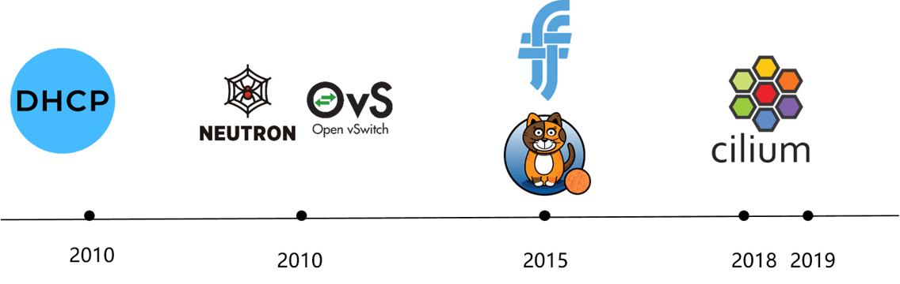
Fig 1-1. Various network solutions over the past years
具体到一些我们所熟悉的计算平台，
- 早起的 bare metal 集群可能会采用 DHCP 加扁平二层（flat L2）网络，
- 虚拟机时代 —— 比较有代表性的 OpenStack 平台，采用的是 Neutron+OVS 大二层网络，
- Docker 内置的典型网络模型是宿主机内的 bridge 加出宿主机的 SNAT，并定义了 CNM 网络模型，
- Kubernetes 定义了 CNI 网络规范，符合这个规范的实现有我们现在所熟悉的 Flannel、Calico、Cilium 等等。
那么，我们的一个问题是，为什么会有这么多网络方案呢？ 或者说，网络架构和解决 方案为什么在不断演进呢？这其中当然有很多方面的原因，我们今天尝试从 不断增长的计算规模 来分析一下这个问题。
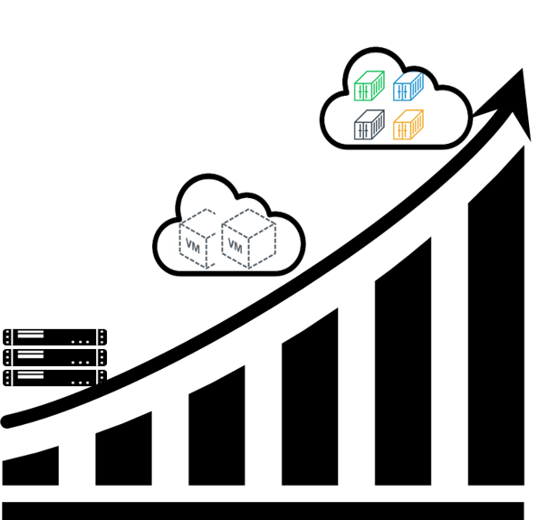
Fig 1-2. The ever-increasing compute endpoints’ scale
这里的计算资源基本单位可以是一台 BM、VM，也可以是容器。相应的对应三个时代：
- 2000-2008 裸金属时代：传统计算模型。
- 2008-2016 虚拟机时代：云计算兴起。
- 2016- 容器时代：云原生开篇。
裸金属（BM）时代
平台特点
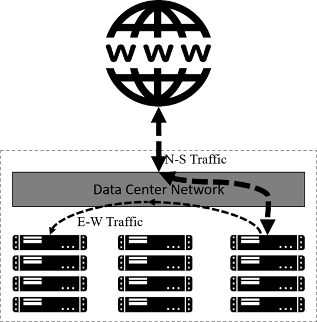
Fig 2-1. Logical BM cluster topology and traffic patterns
如图所示，BM 时期计算平台的特点有：
- 计算资源没有做虚拟化。
- 应用（applications）直接运行在物理服务器上。
- 典型的应用访问模式（application accessing pattern）：客户端-服务器（client-server）模式。
- 南北向流量（进出集群的流量）远大于东西向流量（集群内应用互访的的流量）。
网络需求
这种计算模型给网络提出的需求也很简单：
首先，能够比较高效地处理南北向流量；
第二，集群内应用之间的互访（东西向流量），也就是节点间的网络连通性，这与本文 讨论的主题（计算实例规模）密切相关；
第三，在连通性的基础上，要有必要的访问控制和安全措施。例如可以基于硬件防火墙做网 段级别的控制、基于 iptables 做一些简单的主机防火墙功能等等。这些内容不在本文 讨论范围。
网络解决方案
针对以上需求，业界设计了经典的接入、汇聚、核心三级网络架构，如下图所示：
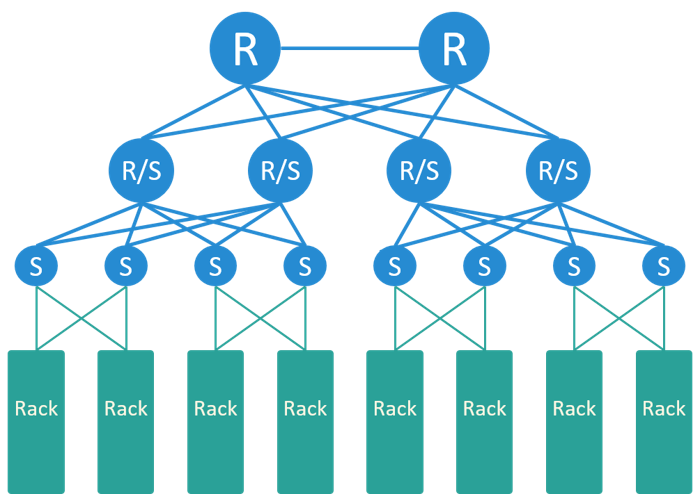
Fig 2-2. Typical network solution for BM platforms
- 南北向流量在核心交换机处理。
- 所有内部子网的网关一般也配置在核心，因此集群内跨网段需要经过核心交换机。
- 整张网络是一个二层网络，也叫桥接网络或交换网络。
在这种模型中，由于节点/应用之间通信都可能要经过核心，因此核心交换机需要记录所 有节点的 IP 和 MAC 地址信息。
网络瓶颈分析（计算规模相关）
在这种网络方案中，与计算节点规模相关的瓶颈最可能出现在核心交换机，因为要实现 任何两台之间节点之间可达，核心交换机需要占用硬件表项（FIB TCAM）来记录集群内所有 主机的 IP/MAC 信息。
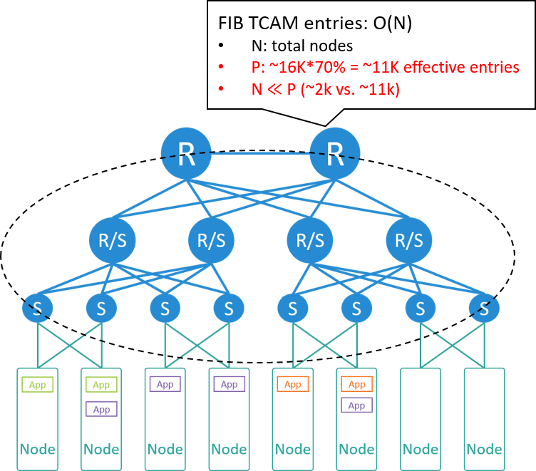
Fig 2-3. Bottleneck analysis
我们来算一下。假设，
- 每个机房（或 POD）200 个机柜
- 每个机柜 10 台服务器
那可以算出整个机房有 2000 台服务器。假设每个 node 占用一到两个 IP 地址，核心交 换机将占用 2k~4k 条表项。
假设使用的核心交换机有 16K 条表项，其中能用到 70% 左右（太高会导致哈希冲突， 包只能交由交换机 CPU 软件处理，导致 CPU 升高、丢包甚至宕机），因此有效表项 是 11K 条。
2K~4K 与 11K 相比可以得出结论：转发表项非常充裕，核心交换机没有表项瓶颈。
虚拟机（VM）时代
2008 年以后，业界开始对计算资源做大规模虚拟化，我们来到了云计算时代。
平台特点
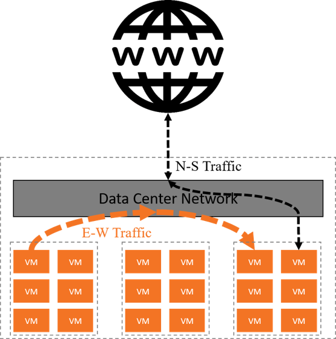
Fig 3-1. Logical VM cluster topology and traffic patterns
这一时期的特点：
- 将基础设施作为服务（IaaS）交付给用户，相应地，计算资源的基本单位也从物理机（BM）变成虚拟机（VM）。
- 计算资源的数量或部署密度比之前高了一个数量级。
- 典型的应用访问模式不再是之前的客户端-服务器模型，而是变成了微服务（ micro-service）模式。
- 与微服务模型对应的一个重要网络变化是：东西向流量超过了南北向流量，成为数据中心的主要流量。
代表性的计算平台有：
- Amazon Web Service (AWS), 2008
- OpenStack, 2010
网络需求
这时对网络的需求：
首先肯定虚拟机之间的网络连通性，需要考虑的问题包括，
- 同宿主机、同网段的虚拟机之间如何通信；
- 同宿主机、跨网段的虚拟机之间如何通信；
- 跨宿主机、同网段的虚拟机之间如何通信；
- 跨宿主机、跨网段的虚拟机之间如何通信；
- 虚拟机和宿主机或物理机之间如何通信；
- 虚拟机进出集群（集群边界）如何通信等等。
第二，虚拟机的 IP 和 MAC 地址要在虚拟机的生命周期内保持不变，这一点特别重要。本 质上来说这是由 IAAS 计算模型决定的：在 IAAS 模型中，交付给用户的是一台一台的 虚拟机资源，因此用户看到的就是 虚拟机这一层抽象，而 IP 和 MAC 是虚拟机的资源 属性，底层虚拟机迁移要做到用户无感知，因此 IP/MAC 地址不能变。
此外还有硬多租户（hard multi-tenancy）和安全，这两点也非常重要，但跟本文要讨论的 关系不大，因此这里也不展开。
网络解决方案
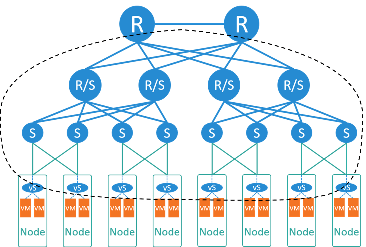
Fig 3-2. Typical network solution for VM platforms
针对以上需求，典型的解决方案是所谓的大二层网络，如上图所示：
首先，在每个宿主机内运行一个虚拟交换机（vswitch），虚拟交换机向上连接到物理交换 机，向下连接到每个虚拟机。因此网络的边界从原来的接入交换机（顶置交换机）这一层， 下沉到宿主机内部，我们开始有了网络虚拟化（network virtualization）。 这样整张网络成为一个大二层网络。
这里大二层的意思是，同网段的虚拟机，不管它们是否在同一台宿主机上，彼此都能 够通过二层（MAC）访问到对方。即，逻辑上它们位于同一个二层网络（二层域）。
和这种模型对应的是一个全局的（或中心式的）负责 IP 地址分配和管理的服务（IPAM）。
大二层网络可以基于数据中心网络实现，也可以在宿主机内用虚拟网络实现，例如 VxLAN 隧道，如果需要动态下发配置，还可以引入 SDN。
如果是基于数据中心网络的大二层，那核心交换机此时不仅需要记录宿主机的 IP/MAC 信息 ，还需要记录所有虚拟机的 IP/MAC 信息，这样才能支持虚拟机全网可迁移。OpenStack 的 provider network 模型就是这样的设计，如下图所示：
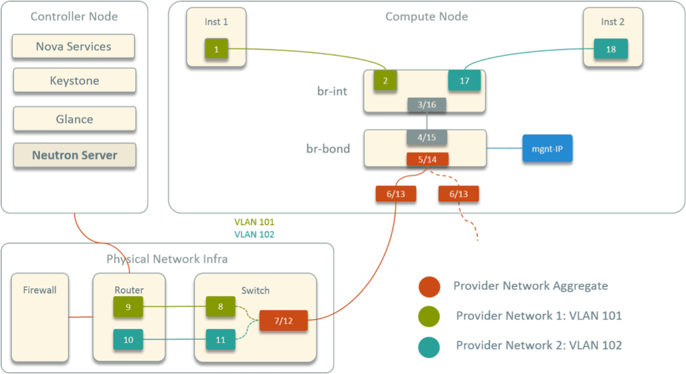
Fig 3-3. OpenStack provider network model
OpenStack 网络方案中有如下几个组件：
- Neutron-server：这是一个全局的负责 IP、Network、Subnet 等网络资源的分配和管理的服务，即上面所说的 global IPAM。
- 每个计算节点上会运行一个 Neutron-OVS-agent，负责虚拟机创建/销毁时的网络配置。
- 每台计算节点上会运行 OVS，负责连接所有虚拟机、虚拟机流量的转发等数据平面的功 能。实际的拓扑比这个还要更复杂一些，因为为了支持安全组还引入了一层 Linux bridge。
Provider 模型中，网关配置在数据中心网络设备（例如核心交换机）上，所有跨网段的 包要经过核心交换机转发。图中从 1 到 18 的数字连起来，就是跨网段的两个虚拟机之间的转发路径。
网络瓶颈分析（计算规模相关）
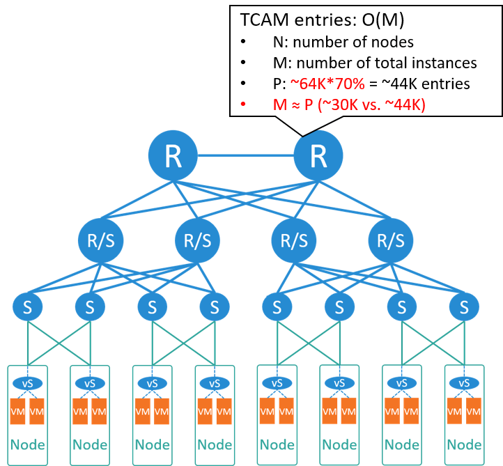
Fig 3-4. Bottleneck analysis
我们来算一下此时核心交换机的表项规模。假如这时我们机房更大了一些，
- 总共 300 个机柜，但其中只有 2/3 的节点用来做虚拟化，1/3 跑传统 BM 应用，例如数据库服务，
- 每个 node 平均 15 台虚拟机，
那可以算出总共有 30k 虚拟机，需要占用核心交换机 ~30K 表项。
如果使用的是主流交换机，核心有 64K 表项，乘以 70% 是 44K，也就是能支撑 4 万 左右实例，大于 ~30K，因此能满足需求。
所以我们得出结论，大二层方案是适合 VM 或 IAAS 模型的。
容器时代
2016 年开始，我们进入了大规模容器时代。容器也被称为轻量级虚拟机，所以它的很多 网络需求与虚拟机类似，但部署密度高了一个数量级。典型的容器平台：
- Mesos
- Kubernetes
沿用大二层模型
如果还是用前面的大二层模型，只是将虚拟机换成容器，如下图所示：
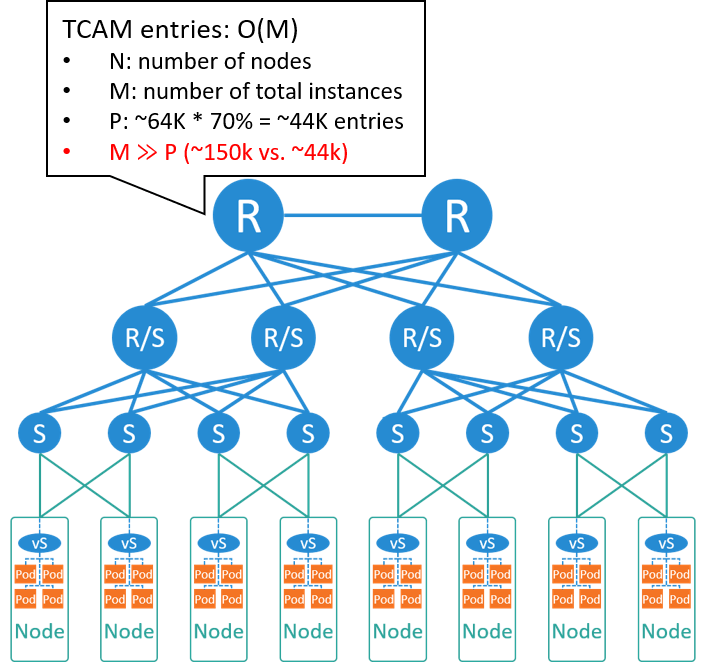
Fig 4-1. If still using large L2 network
如果没有一些很特殊的业务需求，只是单纯基于已有大二层网络实现这样一套容器方案，其 技术难度和开发量都不是很大，例如，如果要将 Kubernetes 接入OpenStack Neutron 网络 ，开发一个针对 Neutron+OVS 的 CNI 插件就可以了 [1]。
但前面提到，这种 global IPAM + central gateway 方案中，核心交换机需要记录 每个实例的 IP/MAC 信息，再考虑到容器的部署密度，可以预见的是，交换机硬件表项将 撑不住。我们来具体算一下。
假设还是 2/3 节点做虚拟化，平均每台 node 部署 75 个容器，那总容器将达到 150K， 远远超过了核心的表项规模。所以这种物理的大二层网络是无法支撑容器规模的。
除了硬件交换机表项这个瓶颈，在软件上，其实 global IPAM 也已经无法在性能上满足容 器频繁的漂移、创建、销毁的需求了。所以大二层方案在软件和硬件上都已经陷入了困境。
因此，网络在容器时代必须做出变化了。
避免网络瓶颈
刚才提到的 64K 表项交换机其实在今天还不算过时，那如何在这张物理网络上支撑 15万、 20 万甚至 30 万以上容器呢（刚才的计算中，还有 1/3 的节点没有做虚拟化，而且容器部 署密度可以进一步提高）？
显然，最重要的一点就是不能让核心交换机记录所有的容器的 IP 信息。怎么做到这一 点呢？
Fig 4-2. If still using large L2 network
比较主流的方式是，
- 在每个 node 内用虚拟路由器（vrouter）替换虚拟交换机（vswitch），将整 张大二层网络拆分成众多的小二层网络。
- 每个 node 管理一个网段，负责该节点内容器 IP 的分配和回收，即从原来的 global IPAM 变成了 local IPAM。
- 每个节点内是一个二层域，节点内容器之间走交换（bridging/switching）；跨节点就 是跨二层域，需要走路由（routing）。
- 每个节点内运行一个 BGP agent，负责节点之间或节点和数据中心网络之间的路由同步。
采用这样的设计之后，
- 核心交换机就只需要记录 node 本身的 IP 和它管理的网段，表项重新回到与宿主机数量同一量级，而与容器的数量没有直接关系。
- IPAM 从中心式变成了分散式，性能瓶颈也解决了。
重新审视容器的网络需求
前面看到，只要对网络方案做出一些变化，就可以避免交换机的硬件瓶颈和 IPAM 的软件瓶 颈。
现在我们来重新审视一下容器的特点，以便从需求的角度来讨论什么样的方案才是最适合容 器平台的。
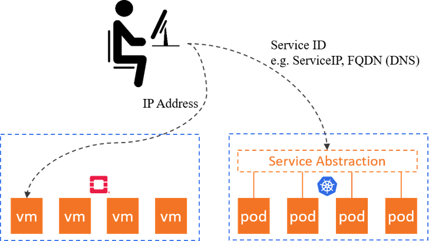
Fig 4-3. Container platform vs. VM paltform
容器编排平台，例如 Kubernetes，跟 OpenStack 这样的虚拟机编排平台相比，最大的不 同之一就是抽象的层次更高。
- 虚拟机平台交付的是虚拟机实例，抽象层次是计算资源本身这一层。
- 而容器平台交付的是服务，例如 k8s 里的 Service，服务屏蔽掉了后面的计算实例的细 节。客户端只需要知道 ServiceIP 等一些更上层的访问入口。
这带来的一个重要变化就是：客户端不再关心服务的具体实例数量，以及每个实例的 IP/MAC 等信息。因此实例的 IP/MAC 地址没有那么重要了，例如 Kubernetes 里大部 分类型的 Pod 在重新发布之后 IP 都会变化。
此时，容器的核心网络需求：
- 规模：例如还是刚才那个机房，现在要能支持 15 万以上容器。
- 快速：包括 IPAM API 的相应时间、为容器创建和删除网络的时间等，否则网络部分会 拖慢整体的容器发布效率。
- 弹性：动态、大规模扩缩容。
- 其他一些需求，例如软的多租户、安全等等，本文不展开。
网络解决方案
综合以上需求，合理的容器网络解决方案就是：
- 小二层网络，加每个 node local 的 IPAM，管理自己的网段
- 再加跨宿主机的直接路由或者隧道
如下图所示，
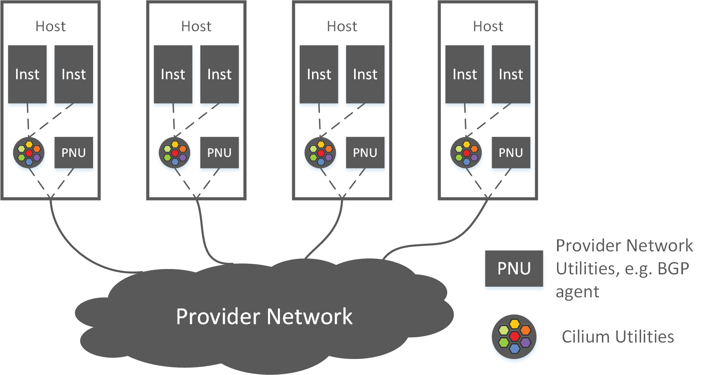
Fig 4-4. Typical network solution for container platforms
那么，和这种模型对应的容器网络方案有：
- Calico + BGP/VxLAN，前几年用的比较多
- Cilium + BGP/VxLAN，最近一两年越来越火
Spine-Leaf 架构
实际上数据中心网络拓扑近些年也有一个变化，从原来的接入-汇聚-核心三级架构变成了现 在的 Spine-Leaf 量级架构，如下图所示：

Fig 4-5. Typical network solution for container platforms, with Spine-Leaf
Spine 层和 Leaf 层组成一个全连接网络，换句话说，任何一个 Leaf 都连接到了任何一个 Spine。这种架构的好处：
- 横向扩展性非常好：任何一层有带宽瓶颈，只需要添加一台新设备，然后和另一层的所 有设备连接起来。
- 链路利用率更高：通过三层（L3）组网，不需要 STP 协议（STP 避免了二层环路，但使 可用带宽减半）。
- 东西向带宽更高：更适合现代微服务的场景。
- 故障域更小：挂掉一台设备，影响范围更小。
Spine-Leaf 拓扑下，容器的网络方案是类似的，还是基于小二层加 local IPAM，只是 BGP 建连会稍有不同 [2]。
云原生网络 Cilium+BGP
这里稍微就 Cilium 网络展开一些讨论，这是最近一两年流行起来的网络方案。
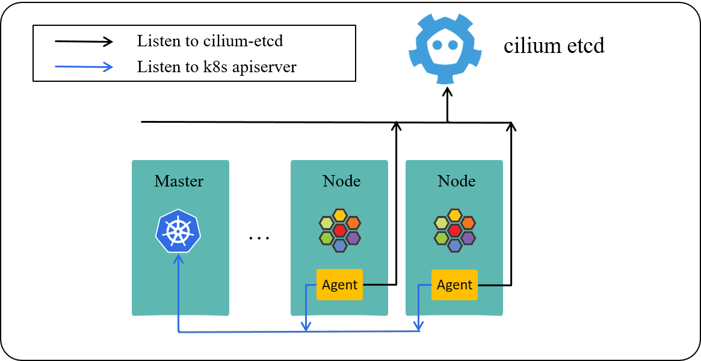
Fig 4-6. Cilium powered Kubernetes cluster [5]
Cilium 的组件如上图所示，主要包括，
- cilium-agent：每台 node 上跑一个，同时监听 k8s apiserver 和 cilium kvstore。
- cilium kvstore：存储 cilium 的一些全局状态，例如 identity。
- cilium-operator：每个集群一个，图中没画出来，在公有云上承担 IPAM 的功能。
Cilium 的核心基于 eBPF，这是 4.8 内核 引入的一项革命性技术：它使得内核变得可编程 。这里可编程的意思是，以前要改变内核行为，需要修改内核代码、编译调试、重新打镜像、 安装运行等等，而且还要维护自己的内核分支，现在可能写几行 eBPF 代码然后动态加载到 内核就能实现同样的效果。
eBPF 目前主要用在两个方向：动态跟踪（tracing） 和网络（networking）。
有了 eBPF/XDP 之后，我们可以看到数据平面处理（dataplane processing）有一个趋势：
- 早期基于内核协议栈处理，更多地以功能为主
- 前些年内核到达性能瓶颈，于是一些团队尝试将部分网络处理放到用户态，预留专门的 、独享的网卡、CPU、内存等资源来收发包，例如 DPDK。
- 最近几年开始重新回到内核。比较有代表性的是 Facebook 的 L4LB Katran，用 eBPF/XDP 重新之后比原来基于 IPVS 的版本快了 10 倍，性能已经和 DPDK 一个量级， ，而且还可以复用内核已有的基础设施和生态。而用户态方式最大的问题之一是原有的网 络工具几乎都失效了，并且没有通用的 L4-L7 协议栈支持。
Cilium 是基于 eBPF 实现的一个网络方案，主打高性能和安全。 对内核要求较高，但也不是非常高，根据我们的使用经验，
- 4.14 能用，
- 4.19 够用；
- 5.x 内核外做了一些优化，或者原生实现了某些高级功能。
更多关于 Cilium+BGP 的实践，可以参考我们之前的文章 [2,3]。
总结
网络方案的演进是一个复杂的过程，涉及到很多因素，本文尝试从计算规模的角度对这一问 题进行了分析。从中可以看出，每种网络方案或网络模型都不是凭空出现的，它们本质上都 是业务需求在网络层的反映；而所有业务需求中，最重要的可能就是规模。